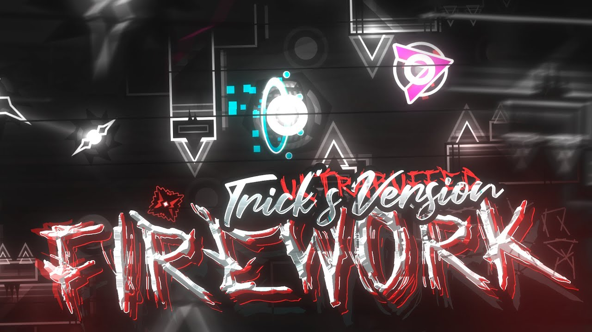

LILIUM
The first part is the hardest part
. It represents a bright and fiery essence consisting of vibrant colors and various effects. The developers of Geometry Dash tried to recreate the look of fiery fireworks so that players can get maximum visual pleasure. This demon also has a special visual accompaniment during the passage of the level.
WOOLWIRINE
The appearance of "Firework" is very attractive. It represents a bright and fiery essence consisting of vibrant colors and various effects. The developers of Geometry Dash tried to recreate the look of fiery fireworks so that players can get maximum visual pleasure. This demon also has a special visual accompaniment during the passage of the level.
BURAGOZ
The appearance of "Firework" is very attractive. It represents a bright and fiery essence consisting of vibrant colors and various effects. The developers of Geometry Dash tried to recreate the look of fiery fireworks so that players can get maximum visual pleasure. This demon also has a special visual accompaniment during the passage of the level.
AGHSTEIN
The appearance of "Firework" is very attractive. It represents a bright and fiery essence consisting of vibrant colors and various effects. The developers of Geometry Dash tried to recreate the look of fiery fireworks so that players can get maximum visual pleasure. This demon also has a special visual accompaniment during the passage of the level.